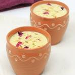

Add garlic and ginger—let them do their thing for a minute.
Blend tomatoes into a puree and pour it in (because smooth is better).
Add chili powder, turmeric, and salt—no hesitation here! Stir and cook until it smells divine.
Pour in the cream, let it simmer and dream about your future
Gently add paneer cubes (don’t throw them in like a tantrum).
Sprinkle garam masala, stir once, and switch off the heat.
Garnish with coriander and serve with naan (because carbs make everything better).
your paneer butter masala is ready, now dig in!! Enjoyy...
Chole Bhature (Spicy Drama Queen)
Chole Bhature - A popular North Indian dish consisting of spicy chickpea curry (chole) served with deep-fried, fluffy bread (bhature), perfect for a hearty meal.
Ingredients for Chole:
1 cup chole
2 Tomatoes (pureed for that drama queen look)
1 Onion (chopped finely, like you’ve chopped all your dreams)
2 tsp Chole Masala (because regular masala is too mainstream)
1 tsp Red Chili Powder (only if you’re not scared of heat)
1/2 tsp Turmeric
2 tbsp Oil (to make things smooth)
Salt (to taste, because life isn’t sweet enough)
Ingredients for Bhature:
2 cups Maida (flour, for that soft, pillowy magic)
1/2 cup Yogurt (the smooth operator)
1/2 tsp Baking Soda (for the fluff that makes everything look better)
Salt (to match your salty mood)
Oil (for deep frying, so wear stretchy pants)
Instructions:
Pressure-cook chole until they’re soft (like your resolve to eat healthy).
Add chopped tomatoes, green chilies, turmeric, garam masala, and salt—mix it all up like a party!
Add soaked rice and 2 cups of water. Cook on low flame until the rice is tender and all the water is absorbed.
Garnish with fresh coriander and serve hot. Enjoy this healthy, comforting dish that’s easy on your tummy!
your Veg pulao is ready, have it with in Cozy weather!!Enjoy...
Moong Dal Chilla
Moong Dal Chilla - A savory, crispy pancake made from ground moong dal (yellow lentils), seasoned with spices and filled with vegetables, perfect for a healthy breakfast or snack.
Ingredients:
1 cup Yellow Moong Dal (soaked for 3-4 hours)
1 Green Chili (finely chopped)
1/4 cup Onion (finely chopped)
1/4 cup Carrot (grated)
1/4 cup Spinach (finely chopped)
1/2 tsp Turmeric Powder
1/2 tsp Cumin Powder
Salt (to taste)
1 tbsp Olive Oil (for cooking)
Instructions:
Grind the soaked moong dal into a smooth batter, add water if needed.
Mix chopped green chili, onion, grated carrot, spinach, turmeric, cumin powder, and salt into the batter.
Heat a non-stick pan and lightly grease with olive oil
Pour a ladle of batter and spread it into a thin circle. Cook on low flame, flipping when golden and crispy.
Serve with a side of chutney or yogurt—this healthy chilla is high in protein and full of flavors!
your Moong Dal chilla is ready, have it in morning with coriander and mint chutney!!Enjoy...
Desserts
Moong Dal Halwa
Moong Dal Halwa - A rich and aromatic dessert made from moong dal, ghee, sugar, and cardamom, slow-cooked to a creamy consistency for a traditional Indian treat.
Ingredients:
1/2 cup Moong Dal (yellow split lentils)
1 cup Milk (low-fat or almond milk for a healthier version)
2 tbsp Ghee
1 tbsp Jaggery (or honey for a lighter option)
1/4 tsp Cardamom Powder
10-12 Cashews and Almonds (chopped)
1/4 cup Water
Instructions:
Sabse pehle, moong dal ko achhe se dhoke, 2-3 ghante ke liye bhigo dena hai.
Phir, dal ko coarsely grind kar lo.
Ek pan mein ghee garam karo, usme moong dal daal kar halki aanch par bhuno jab tak wo thodi si golden na ho jaye.
Ab ismein thoda paani daal kar dal ko cook karo.
Jab dal achhe se cook ho jaye, to usmein milk daal kar cook karte raho jab tak wo creamy consistency mein na aa jaye.
Ismein jaggery ya honey aur cardamom powder daal kar mix karo.
Lastly, dry fruits daal kar mix karo aur thodi der aur cook karo
Serve karte waqt garam-garam halwa ka maza lo!
serve Hot and Enjoy...
Ragi Laddoo
Ragi Laddoo - A wholesome and healthy sweet ball made from ragi flour, jaggery, ghee, and nuts, providing a perfect energy boost.
Ingredients:
1 cup Ragi Flour (finger millet flour)
1/4 cup Jaggery (grated)
1/4 cup Ghee
1/4 tsp Cardamom Powder
1 tbsp Chopped Nuts (cashews, almonds)
1 tbsp Desiccated Coconut (optional)
Instructions:
Ek pan mein ghee garam karo aur usmein ragi flour daal kar bhunein jab tak wo halka golden na ho jaye.
Ab jaggery daal kar usse melt karne dein.
Cardamom powder aur chopped nuts daal kar mix karein.
Jab mixture thoda thanda ho jaye, to usse small laddoos mein shape dekar roll kar lein.
Agar chahiye to desiccated coconut se coat bhi kar sakte hain.
Ragi laddoos ready hain! Serve karte waqt enjoy karein
Beverages
Iced Matcha Latte (Refreshing and Energizing)
Iced Matcha - A refreshing cold beverage made with matcha green tea powder, ice, and a touch of sweetener, offering a perfect blend of antioxidants and energy.
Ingredients:
1 tsp Matcha Powder
1/2 cup Hot Water
1/2 cup Milk (or any milk substitute)
1-2 tsp Honey or Sweetener
Ice Cubes
Instructions:
Matcha powder ko garam paani mein dissolve kar lein.
Milk ko thoda garam karen ya chilled rakh lein (apni preference ke hisaab se).
Ek glass mein ice cubes daal kar, matcha mixture aur milk daal ke mix karein.
Sweeten with honey or your preferred sweetener.
Serve and enjoy this energizing drink on a hot day!
Thandai(Traditional Indian Drink)

Thandai - A traditional Indian cold drink made with a blend of milk, nuts, seeds, and aromatic spices, commonly enjoyed during festivals like Holi.
Ingredients:
1 cup Milk
1/4 cup Almonds (soaked overnight)
1 tbsp Pistachios
1 tbsp Fennel Seeds
1/2 tbsp Peppercorns
1-2 tbsp Sugar or Honey
1/4 tsp Rose Water (optional)
1/2 tsp Cardamom Powder
Instructions:
Sab dry ingredients (almonds, pistachios, fennel seeds, peppercorns) ko grinder mein daal kar coarsely grind kar lein.
Milk ko garam karen, phir ground mixture aur cardamom powder daal kar mix kar lein.
Sugar ya honey daal kar stir karein.
Rose water add kar sakte hain for an aromatic touch.
Serve chilled, perfect for festivals or gatherings!